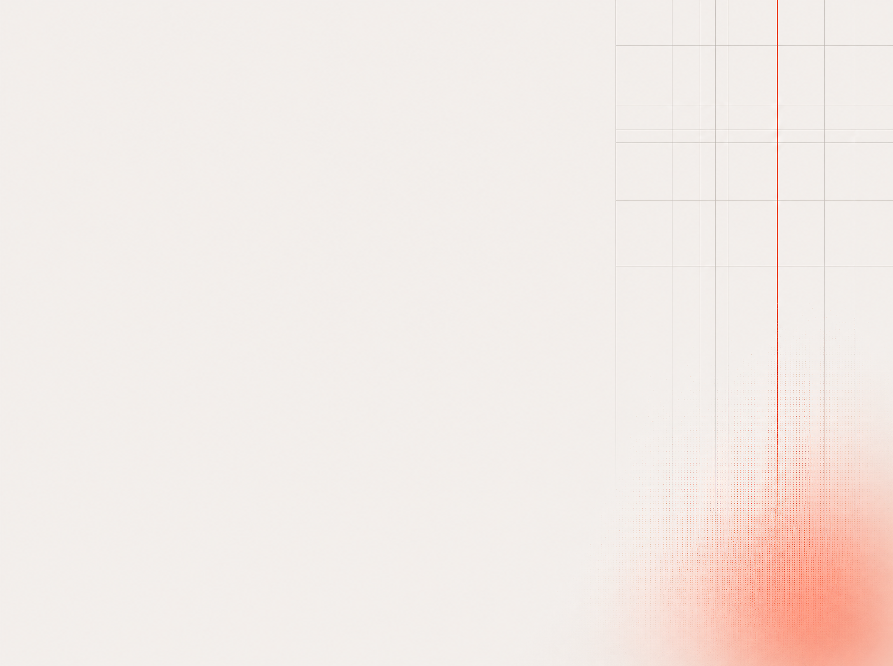

PP.MEDIA · И_И_ · эффект автоматизации
Координационное
трение
.
ИИ В ГОТОВОМ ПРОЦЕССЕ
бот
этап
1
этап
2
этап
3
этап
4
стык
стык
стык
бот ускорил один этап, склейка на стыках осталась
ТРЕНИЕ НА СТЫКАХ ОСТАЛОСЬ
→
ПРОЦЕСС СОБРАН МАШИНОЧИТАЕМЫМ
этап
1
этап
2
этап
3
этап
4
ОБЩАЯ ПАМЯТЬ · ОЗЕРО
контекст · правила · статусы
СТЫКИ ИСЧЕЗЛИ · ТРЕНИЕ СНЯТО
НА ЧТО УХОДИТ ВРЕМЯ МЕЖДУ ЗАДАЧАМИ
01
ПОИСК
где лежит файл,
в каком чате обсуждали,
какая версия свежая
02
ПОВТОРНОЕ ВНИКАНИЕ
каждый поднимает
историю задачи
заново
03
ПЕРЕДАЧА В РУКИ
контекст пересказывают
заново на каждой
передаче
04
СВЕРКА
что изменилось,
кто теперь владелец,
какое правило тут
!
Итог
Снятое трение поднимает пропускную способность всей системы.
Ускорение одной задачи такого не даёт.